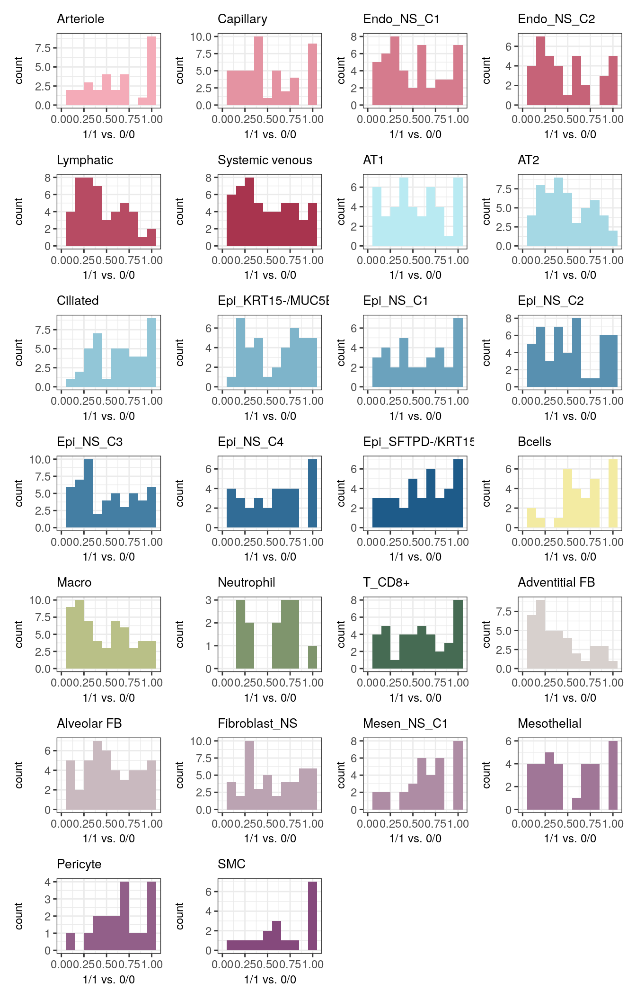
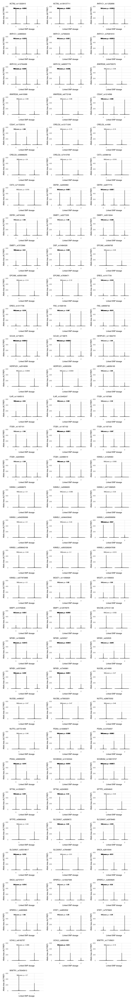
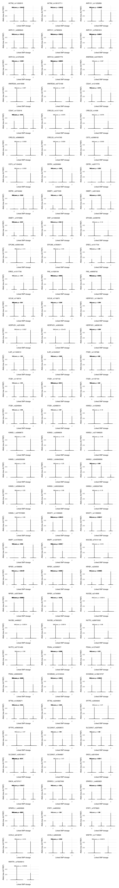
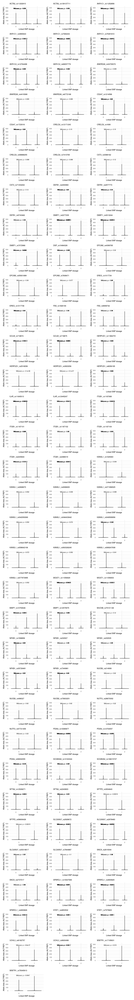

Plotting ASE results
heinin
2023-12-26
Last updated: 2024-04-01
Checks: 6 1
Knit directory: ILD_ASE_Xenium/
This reproducible R Markdown analysis was created with workflowr (version 1.7.1). The Checks tab describes the reproducibility checks that were applied when the results were created. The Past versions tab lists the development history.
Great! Since the R Markdown file has been committed to the Git repository, you know the exact version of the code that produced these results.
Great job! The global environment was empty. Objects defined in the global environment can affect the analysis in your R Markdown file in unknown ways. For reproduciblity it’s best to always run the code in an empty environment.
The command set.seed(20231206) was run prior to running
the code in the R Markdown file. Setting a seed ensures that any results
that rely on randomness, e.g. subsampling or permutations, are
reproducible.
Great job! Recording the operating system, R version, and package versions is critical for reproducibility.
Nice! There were no cached chunks for this analysis, so you can be confident that you successfully produced the results during this run.
Using absolute paths to the files within your workflowr project makes it difficult for you and others to run your code on a different machine. Change the absolute path(s) below to the suggested relative path(s) to make your code more reproducible.
| absolute | relative |
|---|---|
| /home/hnatri/ILD_ASE_Xenium/ | . |
| /home/hnatri/ILD_ASE_Xenium/code/colors_themes.R | code/colors_themes.R |
| /home/hnatri/ILD_ASE_Xenium/code/plot_functions.R | code/plot_functions.R |
| /home/hnatri/ILD_ASE_Xenium/code/utilities.R | code/utilities.R |
Great! You are using Git for version control. Tracking code development and connecting the code version to the results is critical for reproducibility.
The results in this page were generated with repository version 80aea77. See the Past versions tab to see a history of the changes made to the R Markdown and HTML files.
Note that you need to be careful to ensure that all relevant files for
the analysis have been committed to Git prior to generating the results
(you can use wflow_publish or
wflow_git_commit). workflowr only checks the R Markdown
file, but you know if there are other scripts or data files that it
depends on. Below is the status of the Git repository when the results
were generated:
Unstaged changes:
Modified: analysis/ase_readcounts.Rmd
Note that any generated files, e.g. HTML, png, CSS, etc., are not included in this status report because it is ok for generated content to have uncommitted changes.
These are the previous versions of the repository in which changes were
made to the R Markdown (analysis/visualize_ASE.Rmd) and
HTML (docs/visualize_ASE.html) files. If you’ve configured
a remote Git repository (see ?wflow_git_remote), click on
the hyperlinks in the table below to view the files as they were in that
past version.
| File | Version | Author | Date | Message |
|---|---|---|---|---|
| Rmd | 80aea77 | heinin | 2024-04-01 | wflow_publish(c("analysis/index.Rmd", "analysis/samplelevel_pseudobulk.Rmd", |
| html | b33c6bf | heinin | 2024-02-09 | Build site. |
| Rmd | c33f0b2 | heinin | 2024-02-09 | Adding scripts for plotting spatial exp |
| Rmd | db2fd02 | heinin | 2024-01-03 | Updated analysis scripts |
| html | db2fd02 | heinin | 2024-01-03 | Updated analysis scripts |
| Rmd | 6b9ca2a | heinin | 2023-12-27 | Added scripts for quantifying allelic bias |
| html | 6b9ca2a | heinin | 2023-12-27 | Added scripts for quantifying allelic bias |
Packages and environment variables
suppressPackageStartupMessages({library(cli)
library(Seurat)
library(SeuratObject)
library(SeuratDisk)
library(tidyverse)
library(tibble)
library(plyr)
library(dplyr)
library(ggplot2)
library(ggpubr)
library(ggrepel)
library(workflowr)
library(googlesheets4)
library(VariantAnnotation)
library(data.table)})
setwd("/home/hnatri/ILD_ASE_Xenium/")
set.seed(9999)
options(ggrepel.max.overlaps = Inf)
# Colors, themes, cell type markers, and plot functions
source("/home/hnatri/ILD_ASE_Xenium/code/colors_themes.R")
source("/home/hnatri/ILD_ASE_Xenium/code/plot_functions.R")
source("/home/hnatri/ILD_ASE_Xenium/code/utilities.R")
# Cell type annotations
gs4_deauth()
ct_annot <- gs4_get("https://docs.google.com/spreadsheets/d/1SDfhxf6SjllxXEtNPf32ZKTEqHC9QJW3BpRYZFhpqFE/edit?usp=sharing")
sheet_names(ct_annot)
all_celltypes_annot <- read_sheet(ct_annot, sheet = "All celltypes, annotated, merged")Importing data
# Wilcoxon test results for allelic bias
ase_sigtest <- readRDS("/scratch/hnatri/ILD/ILD_spatial_ASE/ase_sigtest.rds")
# Plot order
plot_order <- all_celltypes_annot %>%
dplyr::select("lineage", "annotation_3") %>%
distinct() %>%
arrange(lineage, annotation_3) %>%
dplyr::select(annotation_3) %>% unlist() %>% as.character()
ase_sigtest <- ase_sigtest[plot_order]For each cell type, plotting the nominal p-value distribution
hist_list_1_2vs0 <- lapply(names(ase_sigtest), function(ct){
ggplot(ase_sigtest[[ct]], aes(x = p_1_2vs0, fill = celltype)) +
geom_histogram(binwidth = 0.1) +
xlim(0, 1.05) +
scale_fill_manual(values = annotation_3_col) +
xlab("0/1 & 1/1 vs. 0/0") +
ggtitle(ct) +
theme_bw() +
my_theme +
NoLegend()
})
hist_list_2vs0 <- lapply(names(ase_sigtest), function(ct){
ggplot(ase_sigtest[[ct]], aes(x = p_2vs0, fill = celltype)) +
geom_histogram(binwidth = 0.1) +
xlim(0, 1.05) +
scale_fill_manual(values = annotation_3_col) +
xlab("1/1 vs. 0/0") +
ggtitle(ct) +
theme_bw() +
my_theme +
NoLegend()
})
patchwork::wrap_plots(hist_list_1_2vs0, ncol = 4)
| Version | Author | Date |
|---|---|---|
| db2fd02 | heinin | 2024-01-03 |
patchwork::wrap_plots(hist_list_2vs0, ncol = 4)
| Version | Author | Date |
|---|---|---|
| db2fd02 | heinin | 2024-01-03 |
For each cell type, plotting the FDR-adjusted p-value distribution
hist_list_1_2vs0 <- lapply(names(ase_sigtest), function(ct){
ggplot(ase_sigtest[[ct]], aes(x = p_adj_1_2vs0, fill = celltype)) +
geom_histogram(binwidth = 0.1) +
xlim(0, 1.05) +
scale_fill_manual(values = annotation_3_col) +
xlab("0/1 & 1/1 vs. 0/0 FDR(p)") +
ggtitle(ct) +
theme_bw() +
my_theme +
NoLegend()
})
hist_list_2vs0 <- lapply(names(ase_sigtest), function(ct){
ggplot(ase_sigtest[[ct]], aes(x = p_adj_2vs0, fill = celltype)) +
geom_histogram(binwidth = 0.1) +
xlim(0, 1.05) +
scale_fill_manual(values = annotation_3_col) +
xlab("1/1 vs. 0/0 FDR(p)") +
ggtitle(ct) +
theme_bw() +
my_theme +
NoLegend()
})
patchwork::wrap_plots(hist_list_1_2vs0, ncol = 4)
| Version | Author | Date |
|---|---|---|
| db2fd02 | heinin | 2024-01-03 |
patchwork::wrap_plots(hist_list_2vs0, ncol = 4)
| Version | Author | Date |
|---|---|---|
| db2fd02 | heinin | 2024-01-03 |
Examining the most significant loci
# Subsetting significant loci
ase_sig <- lapply(names(ase_sigtest), function(ct){
ase_sigtest[[ct]] %>% filter(p_adj_1_2vs0 <= 0.05 | p_adj_2vs0 <= 0.05)
})
ase_sig <- do.call("rbind", ase_sig)
ase_sig p_2vs0 p_1_2vs0 p_adj_2vs0 p_adj_1_2vs0 celltype
KANSL1_rs542050069 NA 9.805924e-05 NA 0.004755873 AT2
KANSL1_rs549599956 0.1116515 7.150431e-05 1 0.004755873 AT2
NFKB1_rs35726481 0.1475899 9.181774e-04 1 0.029687736 AT2Plotting allelic bias
Importing allelic bias and genotype data
ase_res <- readRDS("/scratch/hnatri/ILD/ILD_spatial_ASE/ase_res.rds")
gt_data <- as.matrix(read.csv("/scratch/hnatri/ILD/ILD_spatial_ASE/gt_data.csv", row.names = "X"))
gt_data <- cbind(gt_data, paste0(gt_data[,"gene"], "_", gt_data[,"gene_body_snp"]))
colnames(gt_data)[length(colnames(gt_data))] <- "gene_bodySNP"
gt_data <- cbind(gt_data, paste0(gt_data[,"gene"], "_", gt_data[,"esnp"]))
colnames(gt_data)[length(colnames(gt_data))] <- "gene_esnp"
# Sanity check
dim(ase_res[[1]])[1] 97 34length(intersect(rownames(ase_res[[1]]), gt_data[,"gene_bodySNP"]))[1] 97Combining ASE and genotype data
ase_res <- lapply(ase_res, function(xx){
xx <- xx %>% pivot_longer(cols = setdiff(colnames(xx), c("celltype", "lineage")),
names_to = "Sample_Name",
values_to = "allelic_bias")
xx <- merge(xx, gt_data, by = "Sample_Name")
xx
})Plotting
sort(unique(ase_res[[1]]$gene_bodySNP)) [1] "ACTA2_rs11202915" "ACTA2_rs139137711" "AKR1C1_rs11252856"
[4] "AKR1C1_rs3890643" "AKR1C1_rs7083234" "AKR1C1_rs75391810"
[7] "AKR1C2_rs12764498" "AKR1C2_rs68057779" "ANKRD28_rs34705070"
[10] "ANKRD28_rs4419368" "ANKRD28_rs6772168" "CD247_rs1214596"
[13] "CD247_rs1723018" "CRELD2_rs12171243" "CRELD2_rs1608"
[16] "CRELD2_rs58888255" "CRELD2_rs7410765" "CST3_rs3088162"
[19] "CST3_rs71334202" "DEFB1_rs2293960" "DEFB1_rs2977773"
[22] "DEFB1_rs5743462" "DMBT1_rs2277235" "DMBT1_rs3013244"
[25] "DMBT1_rs7072966" "DSP_rs10484326" "EPCAM_rs4399765"
[28] "EPCAM_rs55931899" "EPCAM_rs7608471" "EREG_rs1017734"
[31] "EREG_rs1017736" "FAS_rs1926194" "FAS_rs9658742"
[34] "GCLM_rs718874" "GCLM_rs718875" "HERPUD1_rs11864751"
[37] "HERPUD1_rs2518058" "HERPUD1_rs3903056" "HERPUD1_rs8056195"
[40] "IL4R_rs11645013" "IL4R_rs12445247" "ITGB1_rs1187068"
[43] "ITGB1_rs1187101" "ITGB1_rs1187102" "ITGB1_rs1187104"
[46] "ITGB1_rs2245844" "ITGB1_rs2488319" "KANSL1_rs1029463"
[49] "KANSL1_rs2668670" "KANSL1_rs2696609" "KANSL1_rs371996525"
[52] "KANSL1_rs542050069" "KANSL1_rs546433642" "KANSL1_rs549599956"
[55] "KANSL1_rs558642106" "KANSL1_rs563326240" "KANSL1_rs569247938"
[58] "KANSL1_rs577973995" "MGST1_rs11056929" "MGST1_rs11056933"
[61] "MMP7_rs10750646" "MMP7_rs12575975" "MUC5B_rs75101148"
[64] "NFKB1_rs1598858" "NFKB1_rs230507" "NFKB1_rs230535"
[67] "NFKB1_rs35726481" "NFKB1_rs7340881" "NUCB2_rs214908"
[70] "NUCB2_rs498327" "NUCB2_rs75833251" "NUTF2_rs28670302"
[73] "NUTF2_rs57721459" "PDIA4_rs10085877" "PDIA4_rs12704057"
[76] "PDIA4_rs56932055" "SCGB3A2_rs13163344" "SCGB3A2_rs138215727"
[79] "SFTA2_rs12528271" "SFTA2_rs2240803" "SFTPD_rs3934643"
[82] "SFTPD_rs58606426" "SLC25A37_rs2928672" "SLC25A37_rs2978483"
[85] "SLC25A37_rs35318617" "SLC25A37_rs7844887" "SNCA_rs2619344"
[88] "SNCA_rs2737017" "SPARCL1_rs10027069" "SPARCL1_rs4693825"
[91] "SPARCL1_rs4693826" "STAT1_rs4853532" "STAT1_rs7575823"
[94] "UCHL3_rs8192757" "UCHL3_rs9600498" "WWTR1_rs17195631"
[97] "WWTR1_rs75045913" for(ct in names(ase_res)){
print(ct)
plot_list <- lapply(sort(unique(ase_res[[ct]]$gene_bodySNP)), function(xx){
p_data <- ase_res[[ct]] %>% filter(gene_bodySNP == xx) %>%
filter_at(vars(allelic_bias), all_vars(!is.infinite(.)))
p <- p_data %>% ggplot(aes(x = linked_SNP_GT, y = allelic_bias)) +
geom_violin() +
stat_compare_means(method = "wilcox.test", size = 2,
label.y = (max(p_data$allelic_bias, na.rm = T)+10)) +
ylim(0, (max(p_data$allelic_bias, na.rm = T)+70)) +
#geom_jitter() +
theme_minimal() +
ggtitle(xx) +
xlab("Linked SNP dosage") +
ylab("Allelic bias (ALT/REF)") +
manuscript_theme
p$layers[[2]]$aes_params$textsize <- 2
p
})
print(patchwork::wrap_plots(plot_list, ncol = 3))
}[1] "AT2"
| Version | Author | Date |
|---|---|---|
| b33c6bf | heinin | 2024-02-09 |
[1] "Epi_SFTPD-/KRT15+"
| Version | Author | Date |
|---|---|---|
| b33c6bf | heinin | 2024-02-09 |
[1] "Epi_NS_C4"
| Version | Author | Date |
|---|---|---|
| b33c6bf | heinin | 2024-02-09 |
[1] "Ciliated"
| Version | Author | Date |
|---|---|---|
| b33c6bf | heinin | 2024-02-09 |
[1] "Epi_KRT15-/MUC5B+"
| Version | Author | Date |
|---|---|---|
| b33c6bf | heinin | 2024-02-09 |
[1] "Macro"
| Version | Author | Date |
|---|---|---|
| b33c6bf | heinin | 2024-02-09 |
[1] "Epi_NS_C2"
| Version | Author | Date |
|---|---|---|
| b33c6bf | heinin | 2024-02-09 |
[1] "AT1"
| Version | Author | Date |
|---|---|---|
| b33c6bf | heinin | 2024-02-09 |
[1] "Endo_NS_C1"
| Version | Author | Date |
|---|---|---|
| b33c6bf | heinin | 2024-02-09 |
[1] "Mesen_NS_C1"
| Version | Author | Date |
|---|---|---|
| b33c6bf | heinin | 2024-02-09 |
[1] "Epi_NS_C3"
| Version | Author | Date |
|---|---|---|
| b33c6bf | heinin | 2024-02-09 |
[1] "Epi_NS_C1"
| Version | Author | Date |
|---|---|---|
| b33c6bf | heinin | 2024-02-09 |
[1] "Fibroblast_NS"
| Version | Author | Date |
|---|---|---|
| b33c6bf | heinin | 2024-02-09 |
[1] "Neutrophil"
| Version | Author | Date |
|---|---|---|
| b33c6bf | heinin | 2024-02-09 |
[1] "T_CD8+"
| Version | Author | Date |
|---|---|---|
| b33c6bf | heinin | 2024-02-09 |
[1] "Bcells"
| Version | Author | Date |
|---|---|---|
| b33c6bf | heinin | 2024-02-09 |
[1] "Endo_NS_C2"
| Version | Author | Date |
|---|---|---|
| b33c6bf | heinin | 2024-02-09 |
[1] "Lymphatic"
| Version | Author | Date |
|---|---|---|
| b33c6bf | heinin | 2024-02-09 |
[1] "Systemic venous"
| Version | Author | Date |
|---|---|---|
| b33c6bf | heinin | 2024-02-09 |
[1] "Arteriole"
| Version | Author | Date |
|---|---|---|
| b33c6bf | heinin | 2024-02-09 |
[1] "Capillary"
| Version | Author | Date |
|---|---|---|
| b33c6bf | heinin | 2024-02-09 |
[1] "Adventitial FB"
| Version | Author | Date |
|---|---|---|
| b33c6bf | heinin | 2024-02-09 |
[1] "Mesothelial"
| Version | Author | Date |
|---|---|---|
| b33c6bf | heinin | 2024-02-09 |
[1] "Alveolar FB"
| Version | Author | Date |
|---|---|---|
| b33c6bf | heinin | 2024-02-09 |
[1] "Pericyte"
| Version | Author | Date |
|---|---|---|
| b33c6bf | heinin | 2024-02-09 |
[1] "SMC"
| Version | Author | Date |
|---|---|---|
| b33c6bf | heinin | 2024-02-09 |
Calculating effect size for allelic bias across genotypes
ase_lm <- lapply(names(ase_res), function(ct){
#print(ct)
res_list <- lapply(sort(unique(ase_res[[ct]]$gene_bodySNP)), function(xx){
p_data <- ase_res[[ct]] %>% filter(gene_bodySNP == xx) %>%
filter_at(vars(allelic_bias), all_vars(!is.infinite(.)))
lm_res <- lm(allelic_bias~linked_SNP_GT, p_data)
lm_res <- summary(lm_res)
return(c(xx, lm_res$adj.r.squared, lm_res$coefficients[,4][[1]]))
})
res_df <- data.frame(do.call(rbind, res_list))
colnames(res_df) <- c("gene_bodySNP", "adjR2", "pval")
res_df$celltype <- ct
res_df
})
names(ase_lm) <- names(ase_res)Comparing to ct-eQTL results
mashR results for each celltype
# SNP info
mashr_snp_info <- fread("/tgen_labs/banovich/IPF/eQTL/2022-08-10_38celltypes-mashr/filtered_MAF-HWE-INDPW_snp-info.txt", header=T)
# Gene info
genes_gtf <- read.table("/tgen_labs/banovich/SingleCell/CellRanger/3_1_0/Ensemble_93/PipelineData/Projects/IPF/References/refdata-cellranger-GRCh38-3.0.0/genes/genes.gtf", sep = "\t")
gene_ids <- gsub(";", "", sapply(strsplit(genes_gtf$V9," "), `[`, 2))
gene_names <- gsub(";", "", sapply(strsplit(genes_gtf$V9," "), `[`, 6))
genes_gtf$feature_id <- gene_ids
genes_gtf$feature_name <- gene_names
genes_gtf <- dplyr::filter(genes_gtf, V3 == "gene")
genes_gtf <- dplyr::select(genes_gtf, V1, V4, V5, feature_id, feature_name)
colnames(genes_gtf) <- c("chr", "start", "stop", "ensembl", "gene")
# mashR results
#celltypes <- list.files("/tgen_labs/banovich/IPF/eQTL/2022-08-10_38celltypes-mashr/2022-08-10_gene-aggregated-means")
#celltypes <- gsub("_agg.tsv", "", celltypes)
#celltypes <- c("epithelial_AT2")
spatial_vs_mashr <- read_sheet(ct_annot, sheet = "Spatial vs. mashr cell types")
celltypes <- setdiff(spatial_vs_mashr$mashr, c(NA))
mashr_res <- lapply(celltypes, function(celltype){
eqtl_stats <- fread(paste0("/tgen_labs/banovich/IPF/eQTL/2022-08-10_38celltypes-mashr/", celltype, ".tsv"),
header=T, sep="\t")
eqtl_stats <- distinct(eqtl_stats)
eqtl_stats$gene_name <- plyr::mapvalues(x = eqtl_stats$feature_id,
from = genes_gtf$ensembl,
to = genes_gtf$gene)
eqtl_stats
})
names(mashr_res) <- celltypesGene + eSNP combinations to look at
head(ase_res[[1]]) Sample_Name celltype allelic_bias esnp probe
1 THD0016 AT2 2.333333 rs3890643 AKR1C1-10-4979609-C
2 THD0016 AT2 2.333333 rs356199 SNCA-4-89823097-T
3 THD0016 AT2 2.333333 rs9501340 SFTA2-6-30953180-A
4 THD0016 AT2 2.333333 rs356199 SNCA-4-89824087-T
5 THD0016 AT2 2.333333 rs55726180 HERPUD1-16-56932504-G
6 THD0016 AT2 2.333333 rs9543963 UCHL3-13-75573767-T
linked_SNP_GT gene chr pos probe_var gene_body_snp eSNP_GT tag_REF
1 1 AKR1C1 10 4979609 C rs11252856 1 A
2 2 SNCA 4 89823097 T rs2619344 1 C
3 2 SFTA2 6 30953180 A rs2240803 2 G
4 2 SNCA 4 89824087 T rs2737017 1 C
5 0 HERPUD1 16 56932504 G rs8056195 0 C
6 0 UCHL3 13 75573767 T rs9600498 0 G
tag_ALT eSNP_REF eSNP_ALT gene_bodySNP gene_esnp
1 C A G AKR1C1_rs11252856 AKR1C1_rs3890643
2 T G A SNCA_rs2619344 SNCA_rs356199
3 A G A SFTA2_rs2240803 SFTA2_rs9501340
4 T G A SNCA_rs2737017 SNCA_rs356199
5 G G A HERPUD1_rs8056195 HERPUD1_rs55726180
6 T C T UCHL3_rs9600498 UCHL3_rs9543963sort(unique(ase_res[[1]]$gene_esnp)) [1] "ACTA2_rs11202914" "AKR1C1_rs3890643" "AKR1C1_rs7076886"
[4] "AKR1C2_rs76216796" "ANKRD28_rs61538149" "CD247_rs1773560"
[7] "CRELD2_rs73443974" "CST3_rs6048928" "DEFB1_rs2977775"
[10] "DMBT1_rs2981750" "DSP_rs3799525" "EPCAM_rs7608471"
[13] "EPCAM_rs77131614" "EREG_rs2367707" "FAS_rs11591675"
[16] "GCLM_rs718873" "HERPUD1_rs1366544" "HERPUD1_rs55726180"
[19] "IL4R_rs2107356" "ITGB1_rs11597869" "ITGB1_rs1187104"
[22] "ITGB1_rs1775114" "ITGB1_rs2488319" "KANSL1_rs60814418"
[25] "MGST1_rs10772933" "MMP7_rs1996352" "MUC5B_rs78526728"
[28] "NFKB1_rs11097786" "NFKB1_rs13118067" "NUCB2_rs11024115"
[31] "NUCB2_rs4757495" "NUTF2_rs11860715" "PDIA4_rs2616857"
[34] "PDIA4_rs3779039" "SCGB3A2_rs62378652" "SFTA2_rs9501340"
[37] "SFTPD_rs7923963" "SLC25A37_rs2928673" "SLC25A37_rs7015818"
[40] "SNCA_rs356199" "SPARCL1_rs1049544" "STAT1_rs1400657"
[43] "UCHL3_rs9543963" "WWTR1_rs28431222" names(ase_lm) [1] "AT2" "Epi_SFTPD-/KRT15+" "Epi_NS_C4"
[4] "Ciliated" "Epi_KRT15-/MUC5B+" "Macro"
[7] "Epi_NS_C2" "AT1" "Endo_NS_C1"
[10] "Mesen_NS_C1" "Epi_NS_C3" "Epi_NS_C1"
[13] "Fibroblast_NS" "Neutrophil" "T_CD8+"
[16] "Bcells" "Endo_NS_C2" "Lymphatic"
[19] "Systemic venous" "Arteriole" "Capillary"
[22] "Adventitial FB" "Mesothelial" "Alveolar FB"
[25] "Pericyte" "SMC" names(mashr_res) [1] "epithelial_AT2" "epithelial_Ciliated"
[3] "epithelial_AT1" "immune_Bcells"
[5] "immune_CD8NKT" "endothelial_Lymphatic"
[7] "endothelial_peribronchiolar" "endothelial_arteriole"
[9] "endothelial_capillary" "mesenchymal_MatrixFB"
[11] "mesenchymal_Mesothelial" "mesenchymal_WNT2+FB"
[13] "mesenchymal_Pericyte" "mesenchymal_SMC" First, looking at AT2 cells
at2 <- mashr_res[["epithelial_AT2"]] %>%
mutate(gene_esnp = paste0(gene_name, "_", snp_rsid)) %>%
as.data.frame()
head(ase_lm[["AT2"]]) gene_bodySNP adjR2 pval celltype
1 ACTA2_rs11202915 -0.000560091855305034 8.76779607744798e-15 AT2
2 ACTA2_rs139137711 -0.000560091855305034 8.76779607744798e-15 AT2
3 AKR1C1_rs11252856 -0.000543535051681365 2.58495024403576e-16 AT2
4 AKR1C1_rs3890643 -0.000546587266758936 2.85924507299824e-14 AT2
5 AKR1C1_rs7083234 -0.00054998572079068 1.4976865067656e-13 AT2
6 AKR1C1_rs75391810 -0.000539848198319426 5.73556024615241e-16 AT2# Adding eQTL info
at2$gene_bodySNP <- plyr::mapvalues(x = at2$gene_esnp,
from = ase_res[[1]]$gene_esnp,
to = ase_res[[1]]$gene_bodySNP)
at2 <- merge(at2, ase_lm[["AT2"]], by = "gene_bodySNP") %>%
dplyr::select(c("gene_bodySNP", "gene_esnp", "feature_id", "snp_id",
"posterior_means", "lfsr", "gene_name", "adjR2", "pval")) %>%
distinct() %>%
filter(complete.cases(.))
at2 %>% ggplot(aes(x = as.numeric(adjR2), y = posterior_means)) +
geom_point() +
geom_smooth(method = "lm") +
theme_minimal() +
xlab("ASE regression R2") +
ylab("mashR posterior means") +
ggtitle("AT2")
| Version | Author | Date |
|---|---|---|
| b33c6bf | heinin | 2024-02-09 |
Looking across all cell types shared between data types
plot_list <- lapply(setdiff(spatial_vs_mashr$mashr, c(NA)), function(ct){
#message(ct)
ct_mashr <- mashr_res[[ct]] %>%
mutate(gene_esnp = paste0(gene_name, "_", snp_rsid)) %>%
as.data.frame()
# Adding eQTL info
ct_mashr$gene_bodySNP <- plyr::mapvalues(x = ct_mashr$gene_esnp,
from = ase_res[[1]]$gene_esnp,
to = ase_res[[1]]$gene_bodySNP,
warn_missing = F)
ase_name <- spatial_vs_mashr %>% filter(mashr == ct) %>%
dplyr::select(spatial) %>% as.character()
ct_mashr <- merge(ct_mashr, ase_lm[[ase_name]], by = "gene_bodySNP") %>%
dplyr::select(c("gene_bodySNP", "gene_esnp", "feature_id", "snp_id",
"posterior_means", "lfsr", "gene_name", "adjR2", "pval")) %>%
distinct() %>%
filter(complete.cases(.))
ct_mashr %>% ggplot(aes(x = as.numeric(adjR2), y = posterior_means)) +
geom_point() +
geom_smooth(method = "lm") +
theme_minimal() +
xlab("ASE regression R2") +
ylab("mashR posterior means") +
ggtitle(ase_name) +
manuscript_theme
})
patchwork::wrap_plots(plot_list, ncol = 3)
| Version | Author | Date |
|---|---|---|
| b33c6bf | heinin | 2024-02-09 |
MUC5B across samples in AT2
at2_mashr <- mashr_res[["epithelial_AT2"]] %>%
mutate(gene_esnp = paste0(gene_name, "_", snp_rsid)) %>%
as.data.frame()
# Adding eQTL info
at2_mashr$gene_bodySNP <- plyr::mapvalues(x = at2_mashr$gene_esnp,
from = ase_res[[1]]$gene_esnp,
to = ase_res[[1]]$gene_bodySNP,
warn_missing = F)
at2_mashr <- merge(at2_mashr, ase_lm[["AT2"]], by = "gene_bodySNP") %>%
dplyr::select(c("gene_bodySNP", "gene_esnp", "feature_id", "snp_id",
"posterior_means", "lfsr", "gene_name", "adjR2", "pval")) %>%
distinct() %>%
filter(complete.cases(.),
gene_name == "MUC5B")
#at2_mashr %>% ggplot(aes(x = as.numeric(adjR2), y = posterior_means)) +
# geom_point() +
# geom_smooth(method = "lm") +
# theme_minimal() +
# xlab("ASE regression R2") +
# ylab("mashR posterior means") +
# #ggtitle(ase_name) +
# manuscript_themeMUC5B expression by probe-SNP genotype in each cell type
Importing data
seurat_object <- readRDS("/tgen_labs/banovich/IPF/Spatial_ASE/ILD_ASE_Xenium_annotated.rds")MUC5B_gt <- gt_data %>% as.data.frame() %>%
filter(gene == "MUC5B") %>%
dplyr::select(gene_body_snp,
esnp,
gene,
Sample_Name,
linked_SNP_GT,
eSNP_GT) %>% distinct()
head(MUC5B_gt) gene_body_snp esnp gene Sample_Name linked_SNP_GT eSNP_GT
91 rs75101148 rs78526728 MUC5B THD0001 0 0
188 rs75101148 rs78526728 MUC5B THD0002 0 0
285 rs75101148 rs78526728 MUC5B THD0005 0 0
382 rs75101148 rs78526728 MUC5B THD0006 0 0
479 rs75101148 rs78526728 MUC5B THD0007 0 0
576 rs75101148 rs78526728 MUC5B THD0008 0 0seurat_object$MUC5B_linked_gt <- plyr::mapvalues(x = seurat_object$Sample_Name,
from = MUC5B_gt$Sample_Name,
to = as.character(MUC5B_gt$linked_SNP_GT))
seurat_object$MUC5B_eSNP_gt <- plyr::mapvalues(x = seurat_object$Sample_Name,
from = MUC5B_gt$Sample_Name,
to = as.character(MUC5B_gt$eSNP_GT))
VlnPlot(seurat_object,
features = rownames(seurat_object)[grep("MUC5B", rownames(seurat_object))],
group.by = "annotation_1",
split.by = "MUC5B_linked_gt",
ncol = 1,
pt.size = 0) &
theme_bw() &
theme(axis.text.x = element_text(angle = 45, vjust = 1, hjust=1))
| Version | Author | Date |
|---|---|---|
| b33c6bf | heinin | 2024-02-09 |
Proportions of eQTL that have the same sign in spatial ASE
res_list <- lapply(setdiff(spatial_vs_mashr$mashr, c(NA)), function(ct){
ct_mashr <- mashr_res[[ct]] %>%
mutate(gene_esnp = paste0(gene_name, "_", snp_rsid)) %>%
as.data.frame()
# Adding eQTL info
ct_mashr$gene_bodySNP <- plyr::mapvalues(x = ct_mashr$gene_esnp,
from = ase_res[[1]]$gene_esnp,
to = ase_res[[1]]$gene_bodySNP,
warn_missing = F)
ase_name <- spatial_vs_mashr %>% filter(mashr == ct) %>%
dplyr::select(spatial) %>% as.character()
ct_mashr <- merge(ct_mashr, ase_lm[[ase_name]], by = "gene_bodySNP") %>%
dplyr::select(c("gene_bodySNP", "gene_esnp", "feature_id", "snp_id",
"posterior_means", "lfsr", "gene_name", "adjR2", "pval")) %>%
distinct() %>%
filter(complete.cases(.))
ct_mashr$celltype <- ct
ct_mashr
})
res_df <- data.frame(do.call(rbind, res_list))
same_sign <- res_df %>% filter((posterior_means < 0 & adjR2 < 0) |
(posterior_means > 0 & adjR2 > 0))
nrow(same_sign)/nrow(res_df)*100[1] 56.92851
sessionInfo()R version 4.3.0 (2023-04-21)
Platform: x86_64-pc-linux-gnu (64-bit)
Running under: Ubuntu 22.04.3 LTS
Matrix products: default
BLAS: /usr/lib/x86_64-linux-gnu/openblas-pthread/libblas.so.3
LAPACK: /usr/lib/x86_64-linux-gnu/openblas-pthread/libopenblasp-r0.3.20.so; LAPACK version 3.10.0
locale:
[1] LC_CTYPE=en_US.UTF-8 LC_NUMERIC=C
[3] LC_TIME=en_US.UTF-8 LC_COLLATE=en_US.UTF-8
[5] LC_MONETARY=en_US.UTF-8 LC_MESSAGES=en_US.UTF-8
[7] LC_PAPER=en_US.UTF-8 LC_NAME=C
[9] LC_ADDRESS=C LC_TELEPHONE=C
[11] LC_MEASUREMENT=en_US.UTF-8 LC_IDENTIFICATION=C
time zone: Etc/UTC
tzcode source: system (glibc)
attached base packages:
[1] grid stats4 stats graphics grDevices utils datasets
[8] methods base
other attached packages:
[1] ComplexHeatmap_2.18.0 RColorBrewer_1.1-3
[3] viridis_0.6.3 viridisLite_0.4.2
[5] ggthemes_4.2.4 data.table_1.14.8
[7] VariantAnnotation_1.48.1 Rsamtools_2.18.0
[9] Biostrings_2.70.2 XVector_0.42.0
[11] SummarizedExperiment_1.32.0 Biobase_2.62.0
[13] GenomicRanges_1.54.1 GenomeInfoDb_1.38.7
[15] IRanges_2.36.0 S4Vectors_0.40.2
[17] MatrixGenerics_1.14.0 matrixStats_1.0.0
[19] BiocGenerics_0.48.1 googlesheets4_1.1.0
[21] ggrepel_0.9.3 ggpubr_0.6.0
[23] plyr_1.8.8 lubridate_1.9.2
[25] forcats_1.0.0 stringr_1.5.0
[27] dplyr_1.1.2 purrr_1.0.2
[29] readr_2.1.4 tidyr_1.3.0
[31] tibble_3.2.1 ggplot2_3.4.2
[33] tidyverse_2.0.0 SeuratDisk_0.0.0.9021
[35] Seurat_5.0.1 SeuratObject_5.0.1
[37] sp_1.6-1 cli_3.6.1
[39] workflowr_1.7.1
loaded via a namespace (and not attached):
[1] fs_1.6.2 spatstat.sparse_3.0-1 bitops_1.0-7
[4] doParallel_1.0.17 httr_1.4.6 tools_4.3.0
[7] sctransform_0.4.1 backports_1.4.1 utf8_1.2.3
[10] R6_2.5.1 mgcv_1.8-42 lazyeval_0.2.2
[13] uwot_0.1.14 GetoptLong_1.0.5 withr_2.5.0
[16] prettyunits_1.1.1 gridExtra_2.3 progressr_0.13.0
[19] spatstat.explore_3.2-1 fastDummies_1.7.3 labeling_0.4.2
[22] sass_0.4.6 spatstat.data_3.0-1 ggridges_0.5.4
[25] pbapply_1.7-0 parallelly_1.36.0 BSgenome_1.70.1
[28] rstudioapi_0.14 RSQLite_2.3.1 shape_1.4.6
[31] generics_0.1.3 BiocIO_1.12.0 ica_1.0-3
[34] spatstat.random_3.1-5 car_3.1-2 Matrix_1.6-5
[37] ggbeeswarm_0.7.2 fansi_1.0.4 abind_1.4-5
[40] lifecycle_1.0.3 whisker_0.4.1 yaml_2.3.7
[43] carData_3.0-5 SparseArray_1.2.4 BiocFileCache_2.10.1
[46] Rtsne_0.16 blob_1.2.4 promises_1.2.0.1
[49] crayon_1.5.2 miniUI_0.1.1.1 lattice_0.21-8
[52] cowplot_1.1.1 GenomicFeatures_1.54.3 KEGGREST_1.42.0
[55] pillar_1.9.0 knitr_1.43 rjson_0.2.21
[58] future.apply_1.11.0 codetools_0.2-19 leiden_0.4.3
[61] glue_1.6.2 getPass_0.2-4 vctrs_0.6.5
[64] png_0.1-8 spam_2.9-1 cellranger_1.1.0
[67] gtable_0.3.3 cachem_1.0.8 xfun_0.39
[70] S4Arrays_1.2.1 mime_0.12 survival_3.5-5
[73] gargle_1.4.0 iterators_1.0.14 ellipsis_0.3.2
[76] fitdistrplus_1.1-11 ROCR_1.0-11 nlme_3.1-162
[79] bit64_4.0.5 progress_1.2.2 filelock_1.0.2
[82] RcppAnnoy_0.0.20 rprojroot_2.0.3 bslib_0.4.2
[85] irlba_2.3.5.1 vipor_0.4.5 KernSmooth_2.23-21
[88] colorspace_2.1-0 DBI_1.1.3 ggrastr_1.0.2
[91] tidyselect_1.2.0 processx_3.8.1 bit_4.0.5
[94] compiler_4.3.0 curl_5.0.1 git2r_0.32.0
[97] hdf5r_1.3.8 xml2_1.3.4 DelayedArray_0.28.0
[100] plotly_4.10.2 rtracklayer_1.62.0 scales_1.2.1
[103] lmtest_0.9-40 callr_3.7.3 rappdirs_0.3.3
[106] digest_0.6.31 goftest_1.2-3 spatstat.utils_3.0-3
[109] rmarkdown_2.22 htmltools_0.5.5 pkgconfig_2.0.3
[112] highr_0.10 dbplyr_2.3.2 fastmap_1.1.1
[115] GlobalOptions_0.1.2 rlang_1.1.1 htmlwidgets_1.6.2
[118] shiny_1.7.4 farver_2.1.1 jquerylib_0.1.4
[121] zoo_1.8-12 jsonlite_1.8.5 BiocParallel_1.36.0
[124] RCurl_1.98-1.12 magrittr_2.0.3 GenomeInfoDbData_1.2.11
[127] dotCall64_1.0-2 patchwork_1.1.2 munsell_0.5.0
[130] Rcpp_1.0.10 reticulate_1.29 stringi_1.7.12
[133] zlibbioc_1.48.0 MASS_7.3-60 parallel_4.3.0
[136] listenv_0.9.0 deldir_1.0-9 splines_4.3.0
[139] tensor_1.5 circlize_0.4.15 hms_1.1.3
[142] ps_1.7.5 igraph_1.4.3 spatstat.geom_3.2-1
[145] ggsignif_0.6.4 RcppHNSW_0.5.0 reshape2_1.4.4
[148] biomaRt_2.58.2 XML_3.99-0.14 evaluate_0.21
[151] foreach_1.5.2 tzdb_0.4.0 httpuv_1.6.11
[154] RANN_2.6.1 polyclip_1.10-4 clue_0.3-64
[157] future_1.32.0 scattermore_1.2 broom_1.0.4
[160] xtable_1.8-4 restfulr_0.0.15 RSpectra_0.16-1
[163] rstatix_0.7.2 later_1.3.1 googledrive_2.1.0
[166] beeswarm_0.4.0 GenomicAlignments_1.38.2 memoise_2.0.1
[169] AnnotationDbi_1.64.1 cluster_2.1.4 timechange_0.2.0
[172] globals_0.16.2